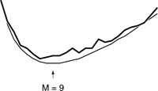
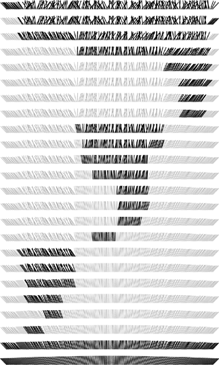

C++ Programming Robert Sedgewick - Princeton University Addison Wesley Professional Algorithms in C++, Parts 1–4: Fundamentals, Data Structure, Sorting, Searching, Third Edition
7.4. Small Subfiles
A definite improvement to quicksort arises from the observation that a recursive program is guaranteed to call itself for many small subfiles, so it should use as good a method as possible when it encounters small subfiles. One obvious way to arrange for it to do so is to change the test at the beginning of the recursive routine from a return to a call on insertion sort, as follows:
if (r-l <= M) insertion(a, l, r);
Here, M is some parameter whose exact value depends upon the implementation. We can determine the best value for M either through analysis or with empirical studies. It is typical to find in such studies that the running time does not vary much for M in the range from about 5 to about 25, with the running time for M in this range on the order of 10 percent less than for the naive choice M = 1 (see Figure 7.8).
Choosing the optimal value for the cutoff for small subfiles results in about a 10 percent improvement in the average running time. Choosing the value precisely is not critical; values from a broad range (from about 5 to about 20) will work about as well for most implementations. The thick line (top) was obtained empirically; the thin line (bottom) was derived analytically.

A slightly easier way to handle small subfiles, which is also slightly more efficient than insertion sorting them as they are encountered, is just to change the test at the beginning to
That is, we simply ignore small subfiles during partitioning. In a nonrecursive implementation, we could do so by not putting any files of size less than M on the stack, or, alternatively, by ignoring all files of size less than M that are found on the stack. After partitioning, what is left is a file that is almost sorted. As discussed in Section 6.5, however, insertion sort is the method of choice for such files. That is, insertion sort will work about as well for such a file as for the collection of little files that it would get if it were being used directly. This method should be used with caution, because insertion sort is likely to work even if quicksort has a bug that causes it not to sort at all. Excessive cost may be the only sign that something went wrong.
Figure 7.9 illustrates this process for a larger file. Even with a relatively large cutoff for small subfiles, the quicksort part of the process runs quickly because relatively few elements are involved in partitioning steps. The insertion sort that finishes the job also runs quickly because it starts with a file that is nearly in order.
Quicksort subfiles are processed independently. This picture shows the result of partitioning each subfile during a sort of 200 elements with a cutoff for files of size 15 or less. We can get a rough idea of the total number of comparisons by counting the number of marked elements by column vertically. In this case, each array position is involved in only six or seven subfiles during the sort.

This technique can be used to good advantage whenever we are dealing with a recursive algorithm. Because of their very nature, we can be sure that all recursive algorithms will be processing small problem instances for a high percentage of the time; we generally do have available a low-overhead brute-force algorithm for small cases; and we therefore generally can improve overall timings with a hybrid algorithm.
Exercises | 7.21 Are sentinel keys needed if insertion sort is called directly from within quicksort? | | 7.22 Instrument Program 7.1 to give the percentage of the comparisons used in partitioning files of size less than 10, 100, and 1000, and print out the percentages when you sort random files of N elements, for N = 103, 104, 105, and 106. |
| | |  7.23 Implement a recursive quicksort with a cutoff to insertion sort for subfiles with less than M elements, and empirically determine the value of M for which Program 7.4 runs fastest in your computing environment to sort random files of N elements, for N = 103, 104, 105,and 106. 7.23 Implement a recursive quicksort with a cutoff to insertion sort for subfiles with less than M elements, and empirically determine the value of M for which Program 7.4 runs fastest in your computing environment to sort random files of N elements, for N = 103, 104, 105,and 106.
| | 7.24 Solve Exercise 7.23 using a nonrecursive implementation. | | 7.25 Solve Exercise 7.23, for the case when the records to be sorted contain a key and b pointers to other information (but we are not using a pointer sort). | |  7.26 Write a program that plots a histogram (see Program 3.7) of the subfile sizes left for insertion sort when you run quicksort for a file of size N with a cutoff for subfiles of size less than M. Run your program for M = 10, 100, and 1000 and N = 103, 104, 105, and 106. 7.26 Write a program that plots a histogram (see Program 3.7) of the subfile sizes left for insertion sort when you run quicksort for a file of size N with a cutoff for subfiles of size less than M. Run your program for M = 10, 100, and 1000 and N = 103, 104, 105, and 106.
| | 7.27 Run empirical studies to determine the average stack size used by quicksort with cutoff for files of size M, when sorting random files of N elements, for M = 10, 100, and 1000 and N = 103, 104, 105,and 106. |
|